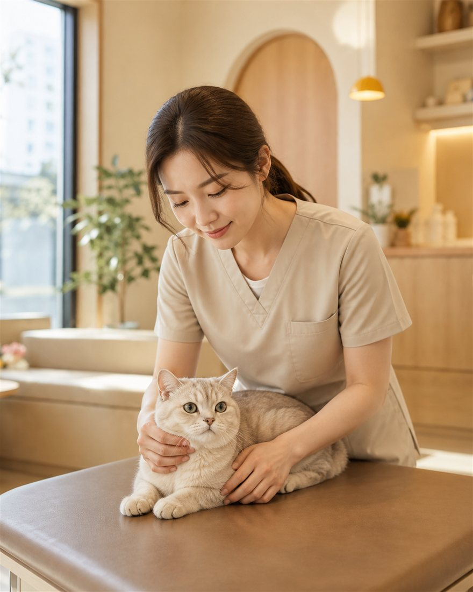

TIPS
병원 오시기 전에
진료의 절반은 집에서 시작됩니다. 이동장에서 이미 지쳐버리면 검사 수치도 달라져요.
- 이동장은 평소 거실에 열어두세요
- 안에 쓰던 담요를 깔아주세요 (익숙한 냄새)
- 이동 중엔 이동장을 수건으로 덮어주세요
- 위로 여는 이동장이 꺼내기 훨씬 편합니다

CAT FRIENDLY
다른 종의 소리와 냄새가 닿지 않습니다
강한 보정 대신 수건으로 감싸 안정시킵니다
차가운 스테인리스 위에 매트를 깝니다
대기실에서 다른 고양이와 마주치지 않게
TIPS
진료의 절반은 집에서 시작됩니다. 이동장에서 이미 지쳐버리면 검사 수치도 달라져요.
HEALTH CHECK
고양이는 아픈 걸 숨깁니다. 증상이 보일 땐 이미 진행된 경우가 많아요.
혈액 · 소변 검사 · 연 1회
혈압 · 갑상선 추가 · 연 1–2회
신장 조기 지표 · 심장 초음파 · 6개월
구내염 · 흡수성 병변 확인 · 연 1회
SERVICE
만성신부전 관리 · 수액 처치 · 식이 상담
구내염 · 스케일링 · 전악 발치
배뇨 실수 · 과도한 그루밍 · 합사 문제